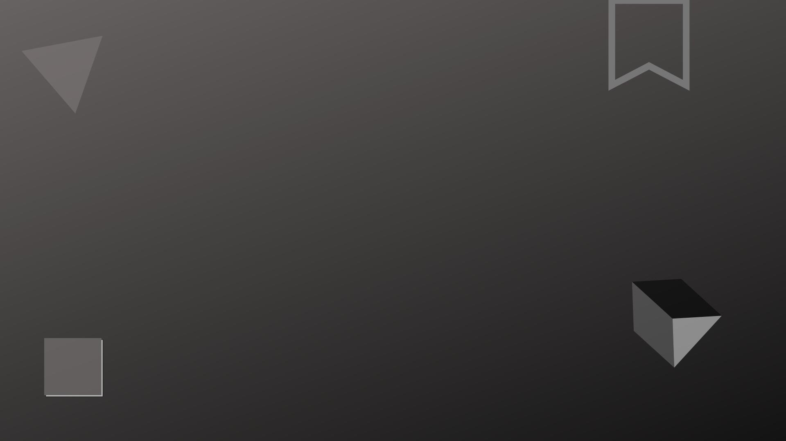
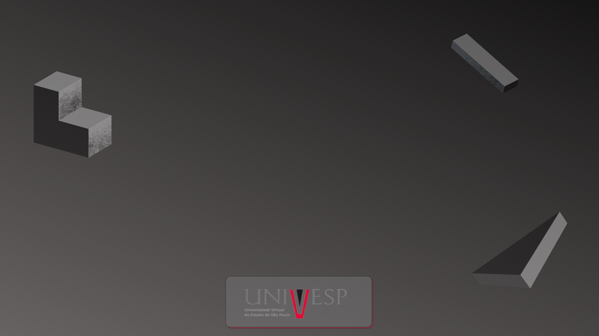

SAARA
Univesp 2021


SOBRE
SAARA - Sistema Auxiliar de Alunos Regulares e Autistas
Somos os estudantes Jackson, Mauricio e Ildevania do Eixo de Computação da UNIVESP (Universidade Virtual do Estado de São Paulo), cuja extensão pertence ao polo de Artur Nogueira. Decidimos fazer este site como nosso Projeto Integrador com o intuito de colaborar e facilitar o trabalho de profissionais que necessitam de um trabalho no ramo educacional de maneira integrada.
Em nossa comunidade há dificuldades em atualizar o plano educacional individualizado e compartilhá-lo para equipe multidisciplinar, família e profissionais que fazem acompanhamento de portadores de necessidades especiais.
Entramos em contato com a comunidade externa para entendermos melhor qual é a "dor" enfrentada e de qual modo poderíamos ajudá-los.
Ficou evidenciado a dificuldade no preenchimento de fichas de crise pré e pós bem como o diário de bordo que é feito em cadernos e depois passado para computador quando as salas de professores auxiliares e acompanhante terapêuticas tenham disponibilidade e isso atrasa um pouco as informações, bem como os procedimentos de manejos e intervenções.
Com o objetivo de desenvolver um software que facilite a articulação das demandas e trazer em tempo real as informações necessárias para fazer as providência e aleterações necessários, criamos esse site. Esperamos que você possa usufruir dessa importante ferramenta e trazer consigo praticidade. Ótimo trabalho, Deus abençoe você e sua familia.
MÃOS À OBRA !!!